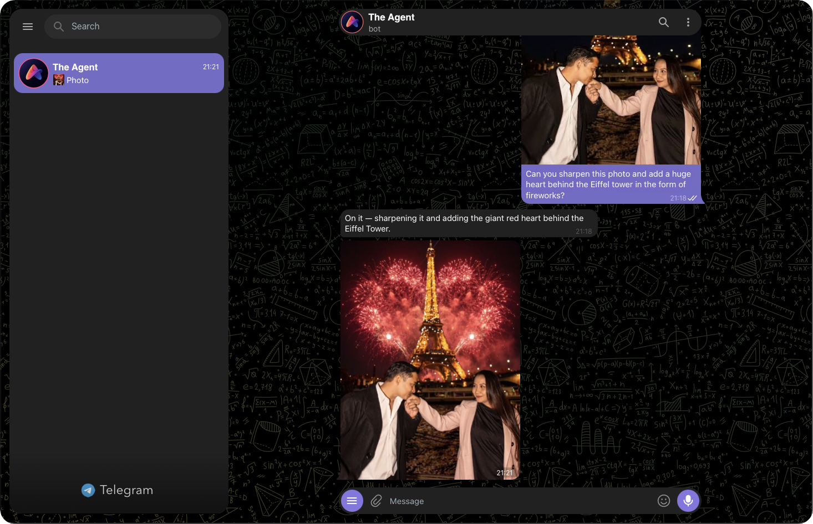
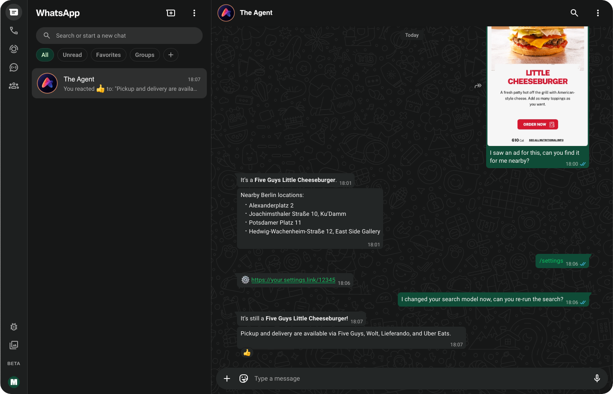
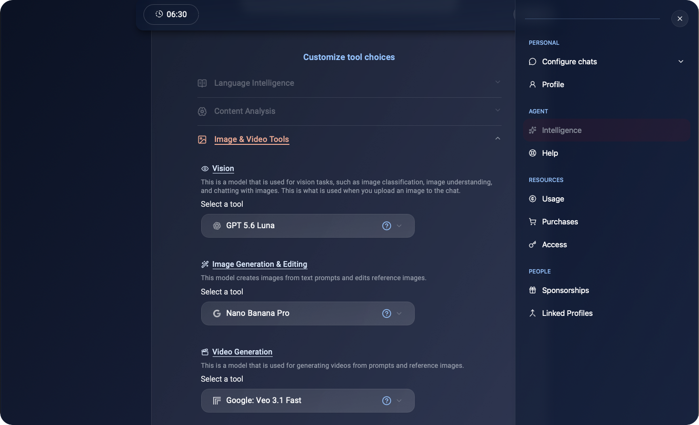
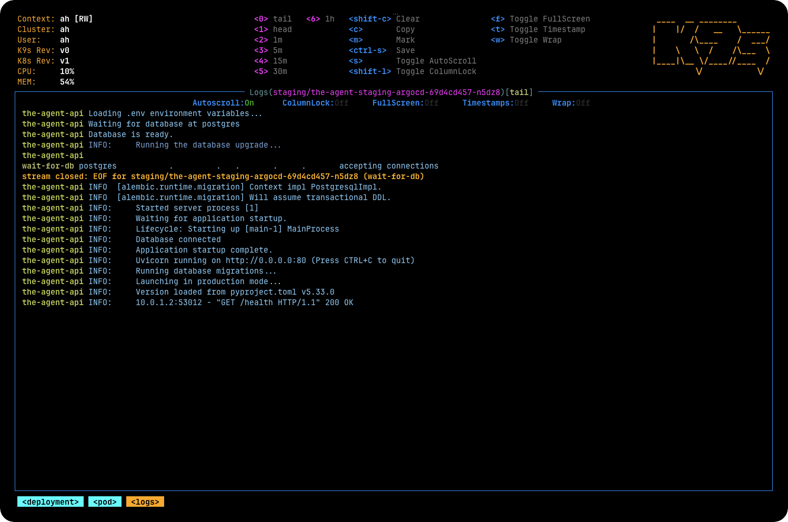

Tasks
Start with what you want done.
Ask for anything in chat, and The Agent will use the required capabilities and connectors. Here, it sharpens a photo and adds the requested effect.
- Task
- Photo editing
- Result
- Photo in chat
Multi app No subscriptionMulti model BYOK
Use leading models for text, image, video, search, and reasoning through one assistant in your choice of supported chat apps – privately or in groups. Bring your own API keys, schedule messages and alerts, pay only for the models you use, or self-host the complete open-source stack.

Subscriptions suck
The best model changes with the task. Your budget changes from month to month, or even day to day. The people you want to use AI with are already in a conversation somewhere. You deserve an agent that leaves these important choices with you.
What changes?
How it works
Select a step to see how the task, model, run path, and result stay visible.

Tasks
Ask for anything in chat, and The Agent will use the required capabilities and connectors. Here, it sharpens a photo and adds the requested effect.

Choices
The settings group your choices by function. You make each selection with full control – no hidden or unpredictable routing.

Operating mode
Use your provider keys or hosted credits, or run the services yourself.
Beyond simple 1:1 replies
Group chats
Mention your assistant in a group chat to settle a dispute, summarize or analyze shared links, create social cards, or work with media in a group setting.
Proactive actions
Set stock monitors, price alerts, announcements, and more – so the agent can follow up at the right moment.
Your inner circle
Provide access to friends & family, while their account, keys, settings, and chats remain separate from yours. Trust, but remain cautious.
Feature explorer
Choose what you want to do, then choose the model that fits. The experience stays consistent while cost, keys, and deployment remain under your control.
Built-in
“Research the trade-offs, show your sources, and give me the short version.”
Choose a smaller text model for chat, but choose a larger model for in-depth reasoning. Search has its own model choice, maximizing accuracy over several iterations.
Available via add-on
“Find news from the Frankfurt stock exchange.”
Use the current web information to form the basis of an answer, then validate, and finally reply with a grounded answer.
Available via add-on
“Keep the original composition and people, remove the reflection, and restore the faded colors.”
The agent will take multiple turns to analyze the sent media, improve your requirements, run editing or generation, and finally reply with an end result.
Available via add-on
“I don't have time to text – listen to what I'm saying and write the follow-up to this situation.”
The agent will transcribe audio, recognize voice, analyze the request, and respond almost as quickly as with text.
Telegram-exclusive
“@agent, is he right? Explain why and give proof.”
The assistant looks up the chat history, analyzes the participants, does the research, and follows up with actions.
Freedom to choose
The agent allows you to bring your own keys (BYOK) for all AI providers – or pay as you go through our routing system.
Costs stay visible and transparent, while the complete stack remains open to repository audits.
Open-source
Connect your model providers and supported chat surfaces, keep control of the deployment, and use your own encryption keys. If you're technical, feel free to contribute to the project and help build features.
Hosted access
Start chatting in Telegram or WhatsApp.
Signup and availability are handled directly in the chat.
Help & FAQ
Need implementation help? Open an issue or read the source documentation.
Report an issueThe software is open source and self-hosting adds no operating fee. On the hosted flavor, your own provider keys also carry no service fee. When using credits on the hosted flavor, we take a minimal operating fee for server rental and maintenance on top of the disclosed AI provider fees.
No. Hosted credits are pay-as-you-go and do not expire. You can also bring your own API keys or self-host.
No. You choose the model for each task from the models available for that capability. This is done once, in settings, and you don't need to worry about it more than once until you're interested in trying out other models.
No. Failed requests are not charged.
You can link your identity and settings across all supported chat surfaces. Conversation history remains associated with each chat, but your profile and settings can be shared across platforms.
Yes, on supported chat surfaces. Current behavior depends on the surface and the features enabled for that deployment – for example, group chat interactions are available only in Telegram.
Almost. Stored keys, messages and other content are all encrypted at rest on the hosted service, and everything is encrypted in transit via HTTPS. To answer a request, the agent must process the content and send required information to your selected model provider – at which point the contents need to be revealed to an AI system.
You can take full control of the software and deployment by self-hosting. On the hosted flavor, export/import and delete features will be available soon – until then, you should reach out to AppifyHub for support with these tasks.
The quickest and easiest way is to start chatting with the Agent in Telegram or WhatsApp and follow the signup flow there. If hosted capacity is temporarily full, the assistant will tell you directly.